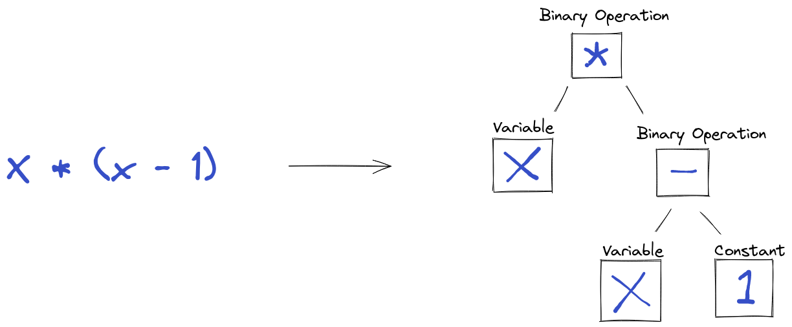
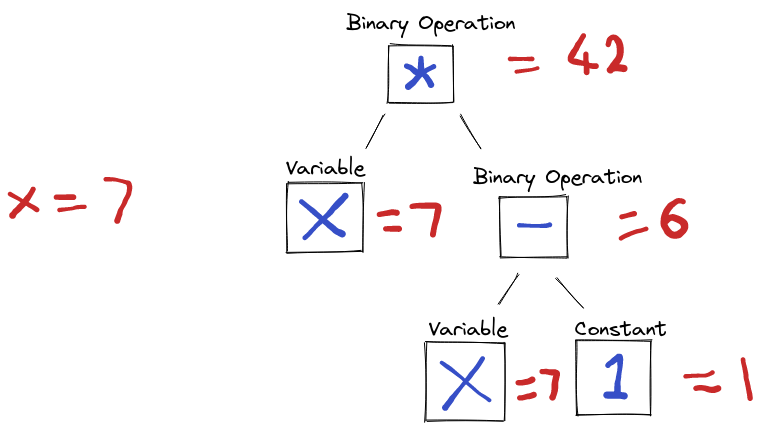

Building an auto-differentiator and re-inventing lambdas in Python
Let’s start with a teaser!
from expr import *
native_lambda = lambda x: x * (x - 1)
magic_lambda = X * (X - 1)
print(native_lambda(7))
# 42
print(magic_lambda(7))
# 42
print(magic_lambda(7, evaluator=Differentiator()))
# x * (x - 1) = x * x - x
# Derivate = 2*x - 1
# 13
You may have seen this magic if you’ve used a machine-learning framework like TensorFlow, which provide an auto-gradient feature for any tensor expressions you build. We discuss a technique that can be used to build lazy operations in python. Laziness also help algebra libraries to avoid intermediate results in a big expression to avoid unnecessary allocations and peform other optimizations.
In the simplest sense, we build an expression interpreter. We can break down the process of evaluating an expression to two steps:
- Parsing - convert input characters to an internal representation
- Interpretation - interpret the above representation to produce a value
Representation
Parsers (like in a compiler) convert characters to an internal representation, generally the Parse Tree or an Abstract Syntax Tree.
Consider an expression x * (x - 1), made up of: the constant 1, the variable x and some binary operations on them. We can represent this as an expression tree, which is much easier to use in algorithms, than a sequence of characters.

The variable and constants become the leaves, and operations combine sub-trees. Let’s define the expression tree:
# expr/nodes.py
from abc import ABC, abstractmethod
class Node(ABC):
"""
Base class of the AST
"""
Node serves as the Abstract Base Class of the tree nodes. Looks rather empty now, but we’ll soon extend the interface as well as add common behaviour.
Let’s add the concrete nodes:
# expr/nodes.py
from dataclasses import dataclass
from typing import Callable
@dataclass
class Constant(Node):
"""
A constant.
"""
constant: float
@dataclass
class Variable(Node):
"""
A variable, identified by an index. This is an index into the argument list provided during evaluation
"""
index: int
@dataclass
class BinaryOperation(Node):
"""
A binary operation between two arbitrary nodes. The operator is a callable that takes two floats and returns one.
"""
operator: Callable[[float, float], float]
left: Node
right: Node
We make use of dataclasses to free us from some boilerplate. Note how BinaryOperation contains two arbitrary nodes, this allows to represent any expressions built using binary operations with an arbitrary depth.
If we were building a compiler, we’d have the job of building a full parser that reads characters creates the syntax tree, thankfully, we are not. We are working in the confines of Python, we can leverage it’s features.
Consider the python expression x + 1 The interpreter invokes the add dunder method of the first operand, note that the language doesn’t impose any constraint on what we can return. Instead of just returning a numerical value, we can return an object that encapsulates the operation and can be evaluated lazily. We will use operator overloading to create the expression tree.
Let’s add this to our base Node class. We’ll start simple and support just addition, subtraction and multiplication. You are of course free to extend this later (eg. with power, or division operation)!
# expr/nodes.py
from operator import add, sub, mul
class Node(ABC):
"""
Base class of the expression tree
"""
def __add__(self, node) -> 'Node':
return BinaryOperation(operator=add, left=self, right=_node_or_constant(node))
def __sub__(self, node) -> 'Node':
return BinaryOperation(operator=sub, left=self, right=_node_or_constant(node))
def __mul__(self, node) -> 'Node':
return BinaryOperation(operator=mul, left=self, right=_node_or_constant(node))
def _node_or_constant(val: Node | float) -> Node:
"""
If the argument is a node, do nothing, otherwise build a `Constant` node out of the literal value
"""
if isinstance(val, Node):
return val
return Constant(constant=val)
Let’s try it!
from expr.nodes import Variable
X = Variable(0)
print(X)
print(X + X)
print(X - 1)
print(X * (X - 1))
We are halfway there!
Interpretation
Now that have our AST, it’s time to do something useful with it. If we were to evaluate the tree, we start with the leaf, then go up, calculating the value for each subtree, until we have the value of the whole tree. 
This looks like a depth-first traversal. However, unlike regular depth first search, the value of the different nodes are calculated differently. The simplest way to support is to simply add a method like value(self) -> float to our nodes and use Python’s inheritance based polymorphism. What if you want to add a new type of traversal that calculates a different value? What if we want to add a tree printer? We would have to go back and extend the interface with an extra method, then add it to each node. If the different types of traversals are somewhat limited, this is a reasonable solution. However, it splits the logic into several places. So if were to implement a differentiator, we have to touch a bunch of different classes.
Wouldn’t it be better if we can group this logic based on the different type of traversal, rather than the type of node? This is the principle of high cohesion and low coupling.
Visitor pattern to the resuce! This allows us to build different visitors, and each visitor contains all logic for a given type of traversal, without spilling responsibilities. The visitor interface has a separate method to visit each node.
# expr/visitor.py
from expr.nodes import Node, Constant, Variable, BinaryOperation
from abc import ABC, abstractmethod
class NodeVisitor(ABC):
"""
Visit a node tree and produce a value
"""
@abstractmethod
def visit_constant(self, node: Constant, *args):
raise NotImplementedError
@abstractmethod
def visit_variable(self, node: Variable, *args):
raise NotImplementedError
@abstractmethod
def visit_binary_operation(self, node: BinaryOperation, *args):
raise NotImplementedError
The node interface is still used to dispatch on the type of node, however, it simply delegates to the right visit method in the visitor. We add an abstract method that accepts the visitor as an argument to our base Node, and the concrete Node will call the appropriate visit method.
# expr.node.py
class Node(ABC):
"""
Base class of the AST
"""
# -- omitting methods that haven't changed -- #
@abstractmethod
def calculate(self, *args, visitor):
raise NotImplementedError
@dataclass
class Constant(Node):
# -- omitting methods that haven't changed -- #
def calculate(self, *args, visitor):
return visitor.visit_constant(self, *args)
You can similarly implement calculate for Variable and BinaryOperation to delegate to visitor.visit_variable and visitor.visit_binary_operation respectively.
Now that we have our interface in place, let’s implement our first visitor, that simply calculates the value of the expression tree. It’s a straightforward implementation:
# expr/value.py
from expr.visitor import NodeVisitor
from expr.nodes import Node, BinaryOperation, Constant, Variable
class ValueVisitor(NodeVisitor):
def visit_constant(self, node: Constant, *args) -> float:
return node.constant
def visit_variable(self, node: Variable, *args) -> float:
return args[node.index]
def visit_binary_operation(self, node: BinaryOperation, *args) -> float:
left_value = node.left.calculate(*args, visitor=self)
right_value = node.right.calculate(*args, visitor=self)
return node.operator(left_value, right_value)
Let’s give it a shot!
from expr.nodes import Variable
from expr.value import ValueVisitor
X = Variable(0)
native_lambda = lambda x: x * (x - 1)
magic_lambda = X * (X - 1)
print(native_lambda(7))
# 42
print(magic_lambda.calculate(7, visitor=ValueVisitor()))
# 42
It walks!
However, it’s a bit of a mouthful, let’s add some sugar.
# expr.node.py
class Node(ABC):
"""
Base class of the AST
"""
# -- omitting methods that haven't changed -- #
@abstractmethod
def calculate(self, *args, visitor):
raise NotImplementedError
def __call__(self, *args, evaluator):
from expr.value import ValueVisitor
if evaluator is None:
evaluator = ValueVisitor()
return self.calculate(*args, visitor=evaluator)
This let’s us do
print(magic_lambda(7))
Differentiation
Thanks to the visitor pattern, adding a second interpreter is really easy. We just add another class.
from expr.visitor import NodeVisitor
from expr.value import ValueVisitor
from expr.nodes import BinaryOperation
from operator import add, sub, mul, truediv as div, pow
from typing import ClassVar
class Differentiator(NodeVisitor):
value_visitor: ClassVar[NodeVisitor] = ValueVisitor()
def visit_constant(self, node, *args) -> float:
return 0
def visit_variable(self, node, *args) -> float:
return 1
def visit_binary_operation(self, node: BinaryOperation, *args) -> float:
if node.operator == add or node.operator == sub:
left_value = node.left.calculate(*args, visitor=self)
right_value = node.right.calculate(*args, visitor=self)
return node.operator(left_value, right_value)
elif node.operator == mul:
left_value = node.left.calculate(*args, visitor=self.value_visitor)
left_derivate = node.left.calculate(*args, visitor=self)
right_value = node.right.calculate(*args, visitor=self.value_visitor)
right_derivate = node.right.calculate(*args, visitor=self)
return left_value * right_derivate + left_derivate * right_value
raise ValueError("unexpected operator")
There you have it! This is a fairly flexible framework and can be extended to support more operations and functions. The differentiator visitor can use the chain rule and support even more functions (hint: a node can represent a function call and the call method can be overloaded). Try the teasor and experiment!